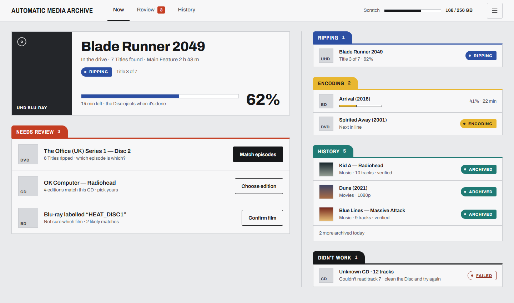
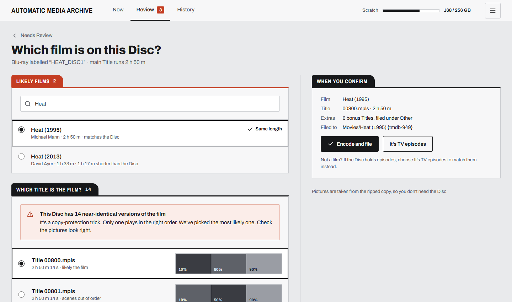
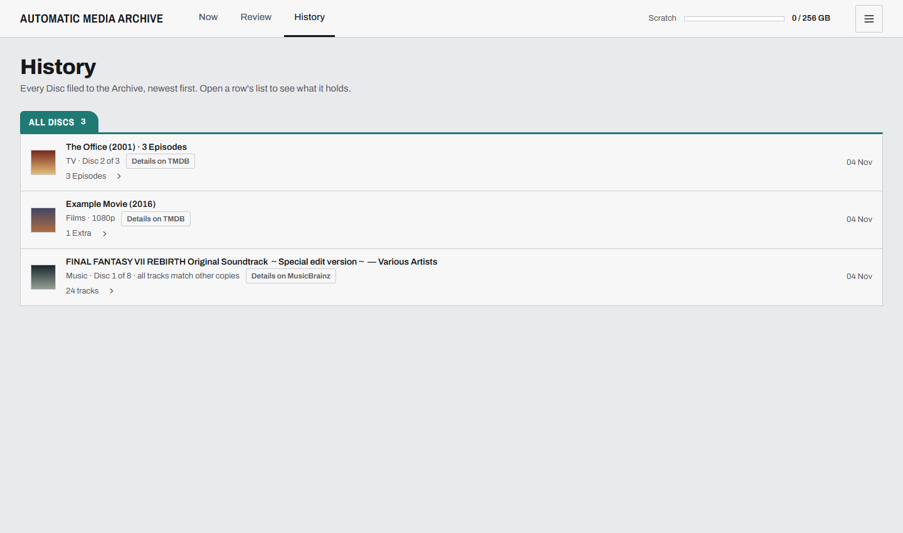

Put a Disc in, it turns up in Plex.
Download for Windows
Windows 10 and 11 · free, MIT licence
See how a Disc flows
Example Discs.
How a Disc flows
The drive is the slow part, so AMA rips first and ejects at once. Everything else happens afterwards, from a scratch folder on the PC.
Ripping
AMA copies the Disc to scratch and ejects it, so the drive is free for the next one. CDs are checked against AccurateRip as they rip.
YouPut the next Disc in.
Needs review
Only when it can’t tell: two close film matches, a CD AccurateRip can’t verify, or which Titles are which Episodes.
YouAnswer one question.
Encoding
Films and TV are encoded to HEVC at the quality you set, on your graphics card if it can. CDs stay lossless FLAC.
YouNothing.
Archived
AMA names it with your Library’s Naming Pattern and moves it into the folder your Plex Library reads.
YouWatch it, or play it.
It asks one question at a time
When AMA isn’t sure, it says so rather than guessing. A notification brings you back, and the Review page asks the one thing it needs to know.
One Disc needs youWhich film is this? Two close matches.
Done: insert the next DiscNorthern Lights, Vol. 2 is in your Music Library.
A Disc didn’t ripEjected. The log says why.
Sent to Discord, ntfy or your own Webhook.
Needs review 1
Which film is this?
DVD · Main Feature 1 h 56 min · matched on TMDB
Ocean’s Eleven (2001)1 h 56 min · same length as the Main Feature
Ocean’s Eleven (1960)2 h 7 min
Archive itNeither, search TMDB
Example. The real page also shows frames from each Title.
What it looks like
One page shows the drive and every Disc behind its stage. It works on the phone you’re holding at the drive.



Screens from the design mockups.
What it handles
Video is kept as a good encode, not a full-size copy of the Disc. The Rip is deleted once the Encode is done.
Disc types
| Disc | What you get | Read with |
|---|---|---|
| CD | FLAC, losslessEach Track checked against AccurateRip; a Track that fails goes to Review. | cyanripdownloaded by AMA |
| DVD | HEVC in MKVMain Feature, Extras and Episodes, at the quality you set. | MakeMKVyou install it |
| BD | HEVC in MKVThe same, from Blu-ray. | MakeMKVyou install it |
| UHD | HEVC 10-bit with HDR10HDR10 is kept. Dolby Vision and HDR10+ are not. | MakeMKVyou install it |
Windows 10 or 11The PC with the drive
An optical driveOne is enough
PlexAnywhere that can see your Library folders
NVIDIA or Intel graphicsOptional: faster Encodes. Any CPU works.
Install
Three steps
- Download the installer
AMA-Setup.exe from the latest GitHub release. It installs for your user only, so you don’t need admin rights.
- Run it, past the SmartScreen warning
The installer isn’t signed yet, so Windows warns you. Choose More info, then Run anyway.
- Finish Setup in your browser
AMA opens Setup: it finds your drive, asks where your Libraries live and, if you have one, for a TMDB key. Then it’s ready for a Disc.
Download for WindowsRead the install guideFor Discs you own.